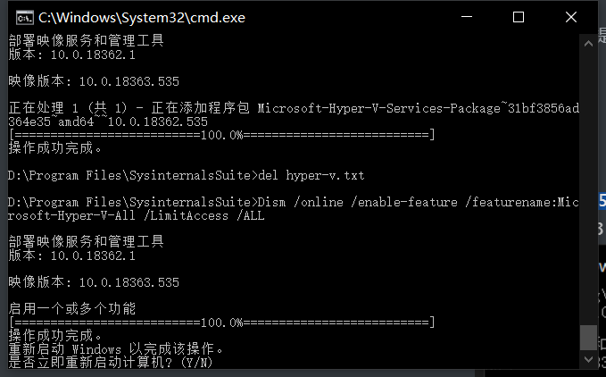
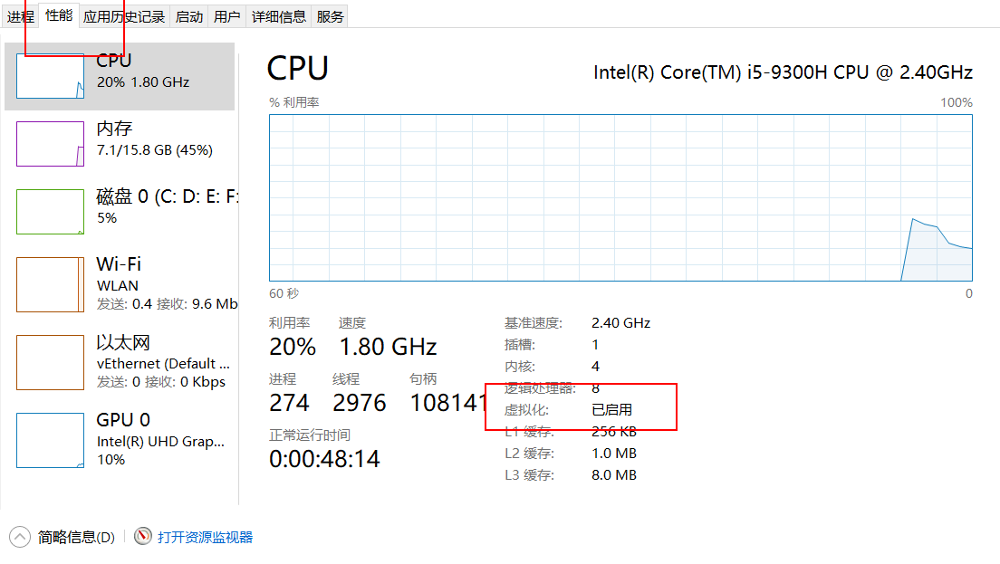

1. 启用虚拟化
参考IT之家学院：Windows 10家庭版如何添加Hyper-V虚拟机？只需一个脚本，用CoreInfo工具软件 (下载地址）来查看电脑是否支持Hyper-V，这是微软SysinternalsSuite工具软件套件中的一个，很实用。
具体使用方法，把下载好的Coreinfo解压到桌面上，用管理员模式打开PowerShell，输入：Coreinfo.exe -v 进行查看。
启用Hyper相关功能，新建一个文件，然后在管理员模式下执行如下脚本。
1
2
3
4
5
|
pushd "%~dp0"
dir /b %SystemRoot%\servicing\Packages\*Hyper-V*.mum >hyper-v.txt
for /f %%i in ('findstr /i . hyper-v.txt 2^>nul') do dism /online /norestart /add-package:"%SystemRoot%\servicing\Packages\%%i"
del hyper-v.txt
Dism /online /enable-feature /featurename:Microsoft-Hyper-V-All /LimitAccess /ALL
|
会出现如下的截图，最后会提示重启计算

按Y重启之后，就可以在开始菜单-所有应用-Windows管理工具中找到“Hyper-V管理器”了，打开它就能使用Hyper-V。
1
|
REG ADD "HKEY_LOCAL_MACHINE\software\Microsoft\Windows NT\CurrentVersion" /v EditionId /T REG_EXPAND_SZ /d Professional /F
|
检查是否开启
怎么看是否开启虚拟化
打开任务管理器，然后转到“性能”选项页，在右下角虚拟化中我们就可以看到了，如果是不可用，那么就是没有开启了。如下图:

2. 安装Docker
Docker提供在windows下的安装包docker-ce-desktop-windows，但下载安装包需要登陆，一堆人在github上吐槽，我在帖子下找到免登陆的链接
macOS - Download Community Edition (CE)
Windows -Download Community Edition (CE)
3. 设置在wsl中登陆
由于 Docker daemon无法在wsl下运行，但是可以连接到远程的daemon服务，比如docker-for-windows。
1
2
3
|
sudo apt-get -y install apt-transport-https ca-certificates curl
curl -fsSL https://download.docker.com/linux/ubuntu/gpg | sudo apt-key add -
sudo add-apt-repository "deb [arch=amd64] https://download.docker.com/linux/ubuntu $(lsb_release -cs) stable"
|
国内用户可以将源修改为清华的，可能会快一点
1
|
sudo add-apt-repository "deb [arch=amd64] https://mirrors.tuna.tsinghua.edu.cn/docker-ce/linux/ubuntu $(lsb_release -cs) stable"
|
安装docker
sudo apt-get -y install docker-ce
此时报错，说无法安装，
1
2
3
4
5
6
|
The following packages have unmet dependencies:
docker-ce : Depends: containerd.io (>= 1.2.2-3) but it is not installable
Recommends: aufs-tools but it is not going to be installed
Recommends: cgroupfs-mount but it is not going to be installed or
cgroup-lite but it is not going to be installed
Recommends: pigz but it is not going to be installed
|
网上说安装低版本的，但通过命令查询，在ubuntu19.10下只有一个可用版本。
1
|
apt-cache madison docker-ce
|
考虑到，我们是链接docker服务，只需要在ubuntu下有client即可，安装 docker-ce-cli是可以成功的。
1
|
sudo apt-get -y install docker-ce-cli
|
配置 DOCKER_HOST 环境变量
1
2
3
4
|
#在~/.bashrc 中配置 Docker server的默认端口
export DOCKER_HOST=tcp://0.0.0.0:2375
#reload bashrc
source ~/.bashrc
|
在windows中设置 DockerOnWindows，可以远程访问后，查看docker的版本信息
1
2
3
4
5
6
7
8
9
10
11
12
13
14
15
16
17
18
19
20
21
22
23
24
25
26
27
28
|
docker version
Client: Docker Engine - Community
Version: 19.03.6
API version: 1.40
Go version: go1.12.16
Git commit: 369ce74a3c
Built: Thu Feb 13 01:27:52 2020
OS/Arch: linux/amd64
Experimental: false
Server: Docker Engine - Community
Engine:
Version: 19.03.5
API version: 1.40 (minimum version 1.12)
Go version: go1.12.12
Git commit: 633a0ea
Built: Wed Nov 13 07:29:19 2019
OS/Arch: linux/amd64
Experimental: false
containerd:
Version: v1.2.10
GitCommit: b34a5c8af56e510852c35414db4c1f4fa6172339
runc:
Version: 1.0.0-rc8+dev
GitCommit: 3e425f80a8c931f88e6d94a8c831b9d5aa481657
docker-init:
Version: 0.18.0
GitCommit: fec3683
|
4. 运行docker
网络环境一言难尽，默认会从docker.io拉取镜像，需要修改为国内的源，这个在docker-for-windows下修改，路径为Setttings—>Daemon–>Register Mirror 下填写 https://mirror.ccs.tencentyun.com 即可（还有其他源可供选择）。
只需如下命令查看是否正常
1
2
3
4
5
6
7
|
# 拉取最小的hello-world镜像
docker run hello-world
# 查看系统已有镜像
docker images
# 运行
docker run -it hello-world
|
5. 参考文献
Setting Up Docker for Windows and WSL to Work Flawlessly
Docker 国内仓库和镜像